Each mode was simulated in Autodesk Fusion CFD 2027 before anything was printed: steady-state incompressible flow, k-epsilon turbulence, 30 mph inlet. The plots below are velocity-magnitude streamlines through the wing at each of the three commanded angles.
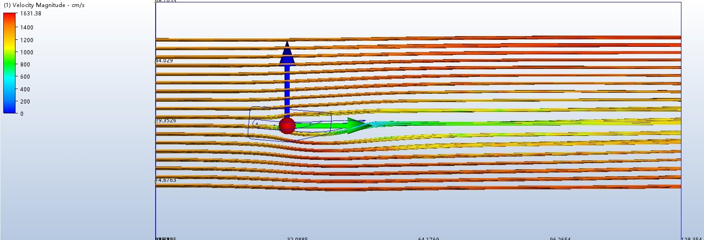
Under throttle, above +0.09 g. The wing lies down and gets out of the way so the drivetrain isn’t fighting it.
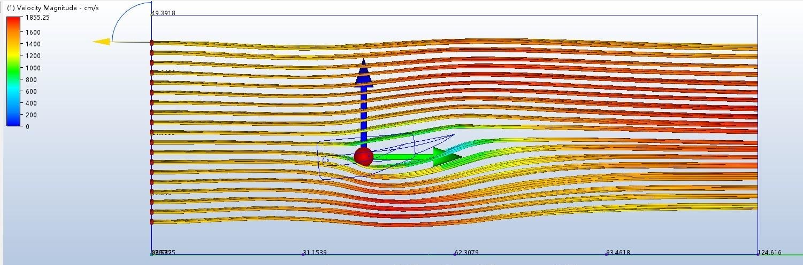
Holding speed, inside the dead band. A shallow positive angle for baseline stability, and the system’s efficiency sweet spot.
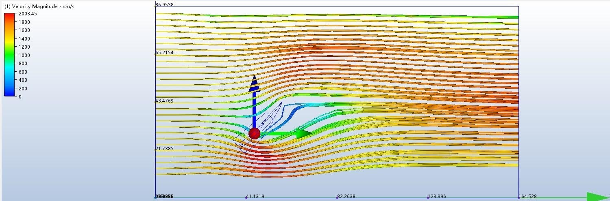
Under braking, below −0.07 g. Flow separates off the upper surface on purpose, and the wake does the work.
The headline isn't the airbrake figure. It's the cruise one: going from neutral to cruise buys ten times the downforce for nine-tenths of a newton of extra drag. That is the whole argument for a cambered profile that works at a shallow angle rather than a flat plate that has to be tipped into the wind to do anything.
| Mode | Angle | Trigger | Downforce (N) | (lb) | Drag (N) | (lb) | D/D ratio |
|---|---|---|---|---|---|---|---|
| Neutral | −5° | accel > +0.09 g | 88.4 | 19.9 | 9.4 | 2.1 | 9.4 : 1 |
| Cruise | +5° | |accel| < 0.07 g | 882.4 | 198.4 | 10.3 | 2.3 | 85.7 : 1 |
| Airbrake | +40° | decel > 0.07 g | 1,708.8 | 384.1 | 262.0 | 58.9 | 6.5 : 1 |
Swipe the table sideways for the rest of the columns.
All three runs at a 30 mph (13.4 m/s) inlet, air at standard conditions (ρ 1.205 kg/m³, μ 1.817×10⁻⁵ Pa·s), steady-state incompressible, k-epsilon turbulence with mesh refinement at the wing surface. Reynolds numbers ran 772,398 at +5° to 1,153,020 at +40°, fully turbulent across every case. Forces taken from the fluid-forces-on-walls output.
Neutral to airbrake is the dramatic one: +1,620.4 N of downforce and +252.6 N of drag, a 2,687% increase in drag that is precisely the airbrake effect the system was built to exploit. But cruise is where the wing earns its keep, and it is the mode the car spends most of its life in.
Downforce and drag pull in opposite directions. A wing set up for high-downforce cornering drags badly down a straight; a wing set up for low-drag top speed gives you nothing under braking or lateral load. Every fixed rear wing ever bolted to a car picks a point on that trade and lives with it.
AVIWS resolves it by refusing to pick. An onboard IMU watches longitudinal acceleration, and the wing pitches to whichever angle the car actually needs right now. Flat under throttle, a shallow positive angle at cruise, and fully deployed as an airbrake under braking.
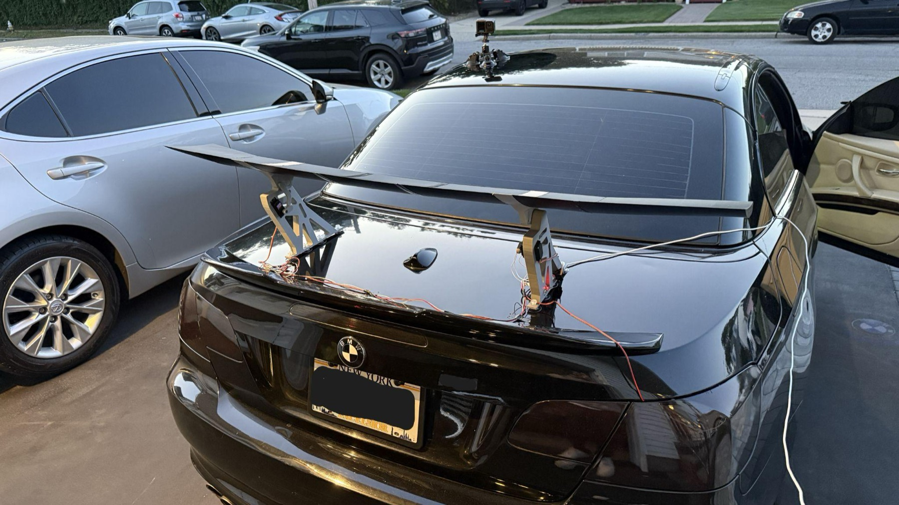
The finished system on the development car. The whole assembly (wing, brackets, servos, electronics and its own battery) mounts to the trunk lid on suction cups and comes off without leaving a mark.
The variable-incidence idea is borrowed from the Vought F-8 Crusader, the only production aircraft that pivoted its entire wing rather than its control surfaces. It raised the wing's incidence for carrier landings so the fuselage could stay level. The second reference is the Zenvo TSR-1, whose rear wing tilts laterally through a corner to generate a yaw-stabilising moment.
The closest everyday relative is F1's DRS, which flattens the rear wing on designated straights to shed drag. AVIWS does the same thing under acceleration, then adds the mode DRS doesn't have: a third, high-angle position that deploys the wing as an active braking aid.
The section started as a standard cambered airfoil, mounted inverted so the pressure differential works downward. It was then modified: more curvature on the upper surface to accelerate the flow and drop the static pressure, and a flatter lower surface to hold a higher-pressure region underneath.
Cambered rather than symmetric was a deliberate call. A symmetric section like a NACA 0012 makes nothing at zero angle of attack, which would mean every newton of cruise downforce had to be bought with servo angle. A cambered inverted profile makes downforce passively at neutral incidence, so the actuator isn't holding a load for the majority of the drive.
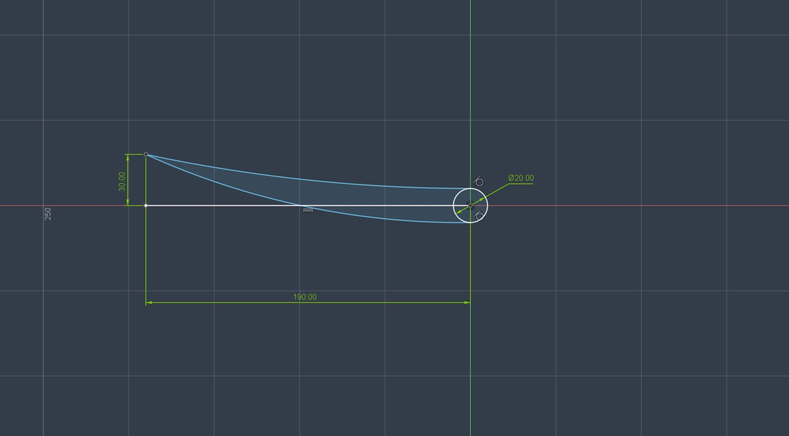
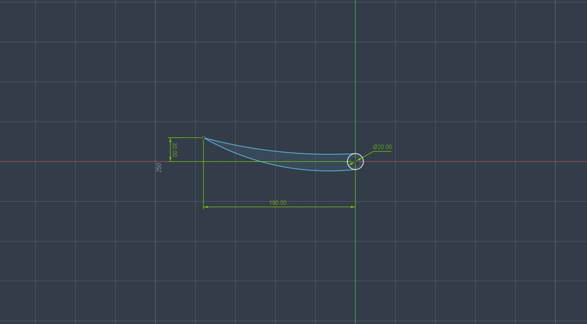
A 900 mm centre section carries the constant profile and does the bulk of the work. Either side of it, a 250 mm outboard section lofts from the centre profile at its inboard end to a higher-angle profile at the tip. That puts more downforce toward the tips and improves spanwise load distribution, with no hard geometric break to trip the flow.
Endplates close both tips. They stop high-pressure air migrating around the wingtip to the low-pressure side, which is what generates induced drag and bleeds away effective lift. They also double as the structural mounting interface, with M3 heat-set inserts moulded straight into the print so nothing needs a nut on the back face.
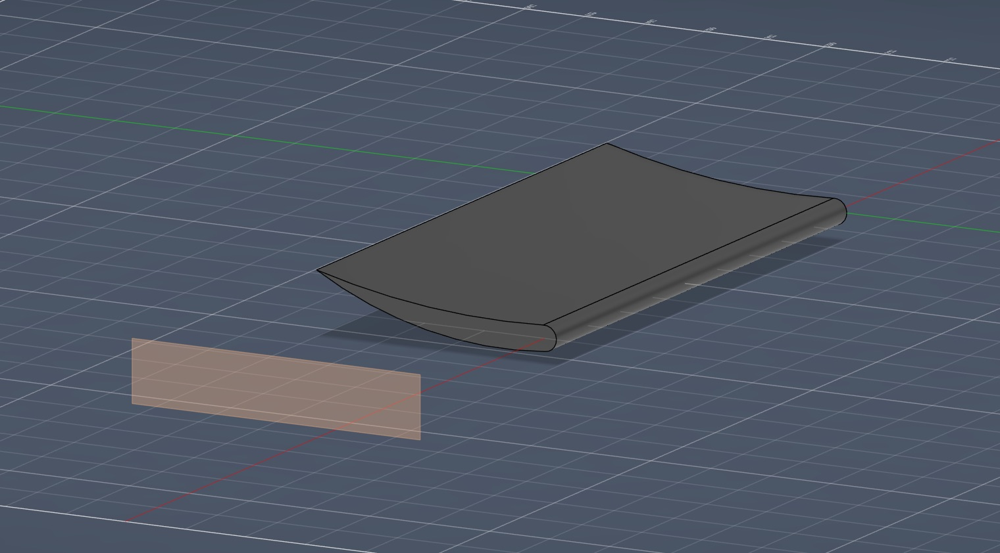
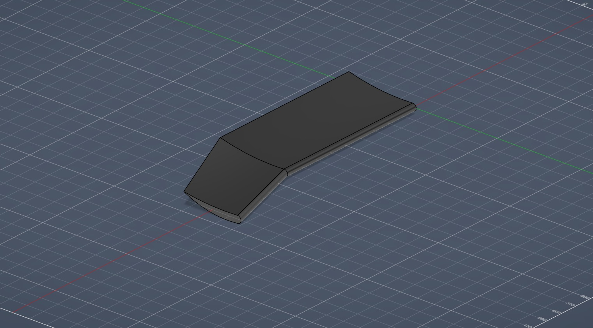
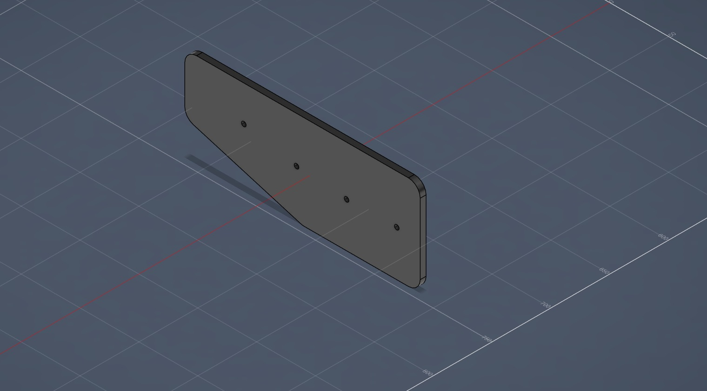
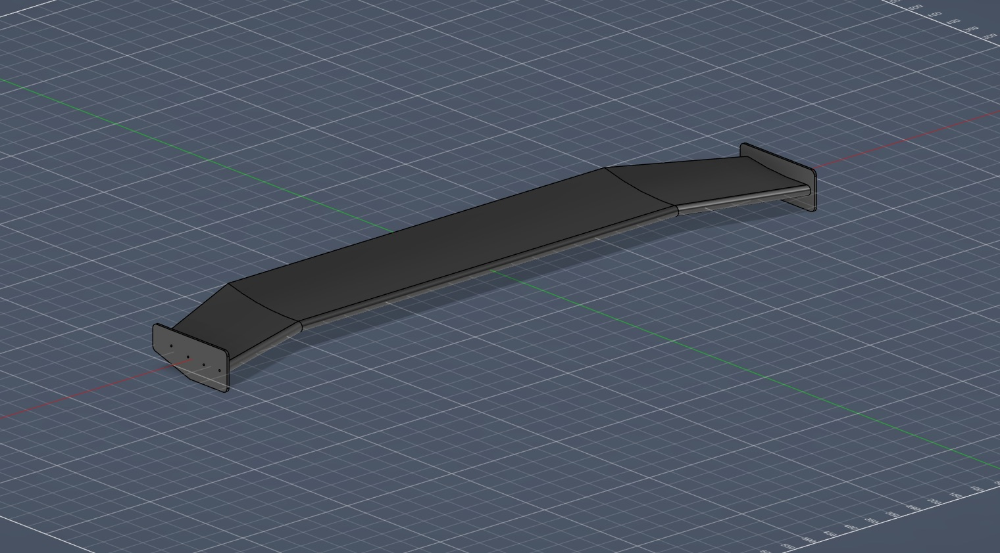
The original fabrication route was XPS foam: hot-wire the profile using printed templates pinned to each face of the block, stack the slices, fair the surface against a printed two-part female mould, then laminate it in 4 oz fibreglass and marine epoxy.
It got abandoned before it started. Hot-wire cutting is only as good as the hand guiding it, and any deviation propagates through every slice in the stack. Fairing foam to a CAD-defined profile is slow and has no guaranteed dimensional accuracy, and lamination adds its own variables on top.
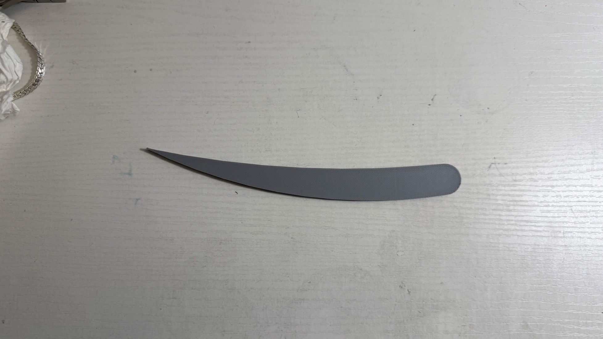
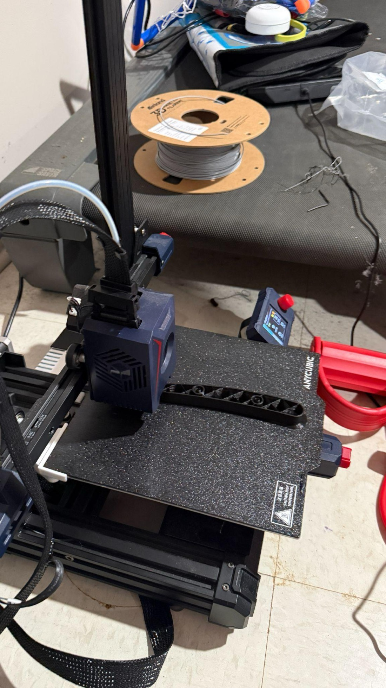
Switching to FDM traded mass for precision, and the trade was worth making. Every part comes off the bed as the CAD file drew it, and the features that would have been miserable to build into a foam core (hinge bores, dowel holes, heat-set insert pockets, servo mounting geometry) are simply part of the print. PLA for the structural components, chosen for dimensional stability and stiffness at these speeds.
No consumer printer swallows a 1,400 mm span, and a monolithic wing would mean reprinting the whole thing to fix any part of it. The centre element is split into 200 mm modules, joined on 10 mm dowel pins in bored holes on each mating face. The dowels hold spanwise alignment and carry shear across the joint, so the assembly loads as one continuous element instead of a chain of segments.
Then every external seam was plastic welded: a soldering iron run along the joint melts and intermixes the PLA on both sides, fusing the modules into a single structure. Dowels do alignment and shear; the weld does continuous spanwise rigidity.
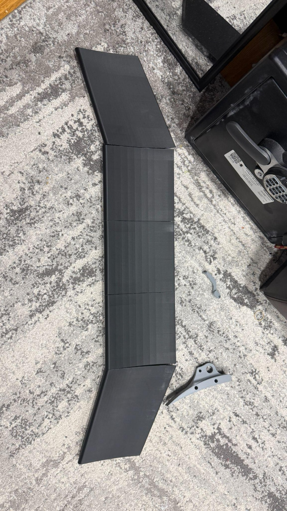
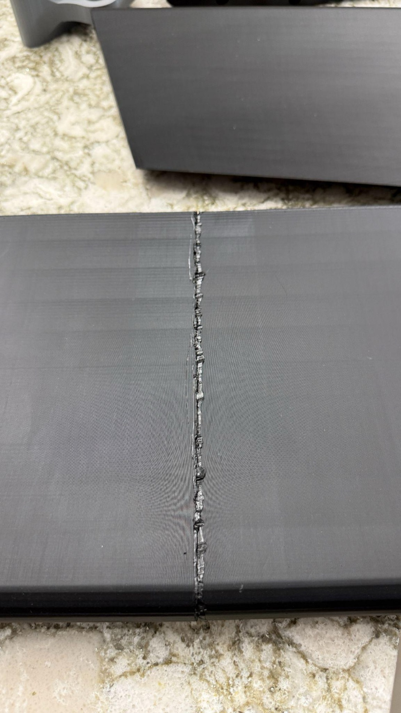
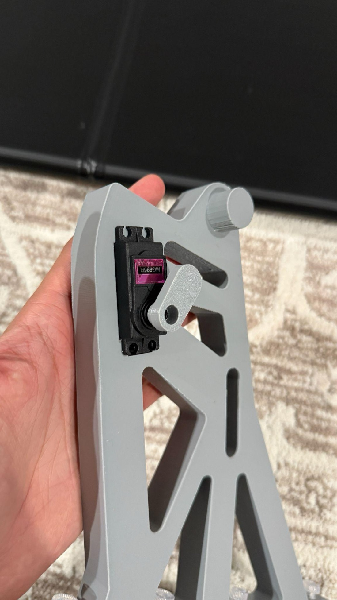
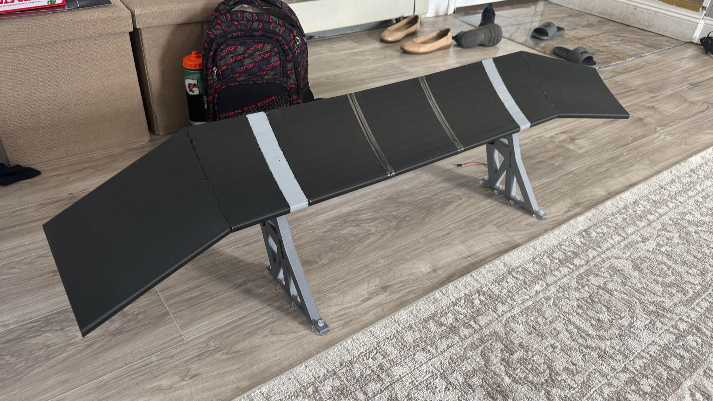
Two DS3218 servos, rated 20 kg·cm stall at 6 V with full metal gears, sit in pockets in the support brackets with their output shafts on the wing's hinge axis. Metal gears were non-negotiable: aerodynamic hinge moment scales with the square of velocity, and at highway speed a wing this size will strip or back-drive the plastic gears in a hobby servo like an SG90 rated at 1.8 kg·cm.
The servos drive the wing through a custom-designed horn rather than a generic one, to kill the angular slop that shows up when an off-the-shelf horn meets a third-party spline. Direct drive was chosen over a pushrod linkage because a slender rod resisting that hinge moment is a buckling risk exactly when you need it most: in the airbrake position, at maximum load.
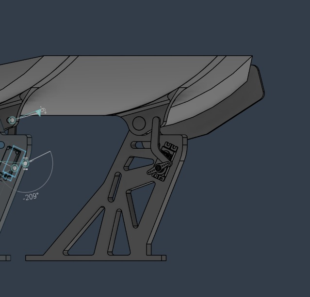
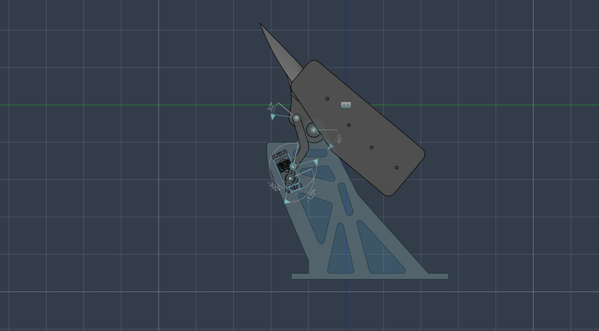
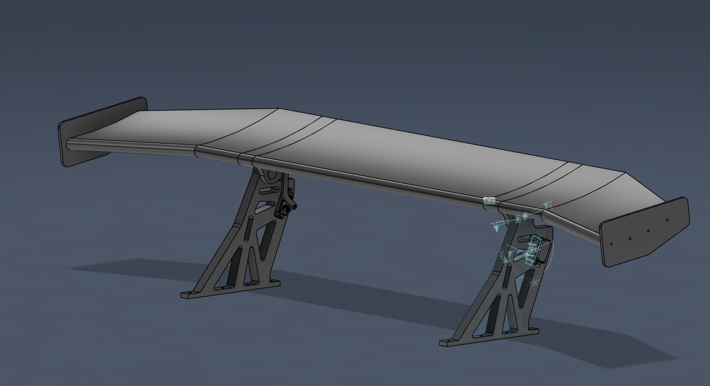
The brief for the electronics was the fewest parts that would do the job reliably. An ESP32 has more of everything, but a single-axis loop with two inputs and one output doesn't need dual cores or WiFi, and reliability scales inversely with part count. The whole assembly is recessed into the bracket's lattice rather than boxed separately, wiring zip-tied at intervals so nothing moves under vibration.
One deliberate detail: the servos are fed straight from the buck output rather than through the Nano's onboard 5 V pin. A loaded DS3218 can pull over an amp, which the Nano's regulator is not rated to supply, so routing around it removes an entire failure mode.
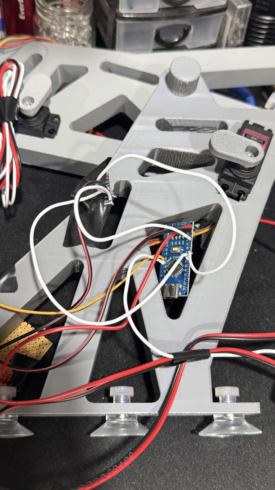
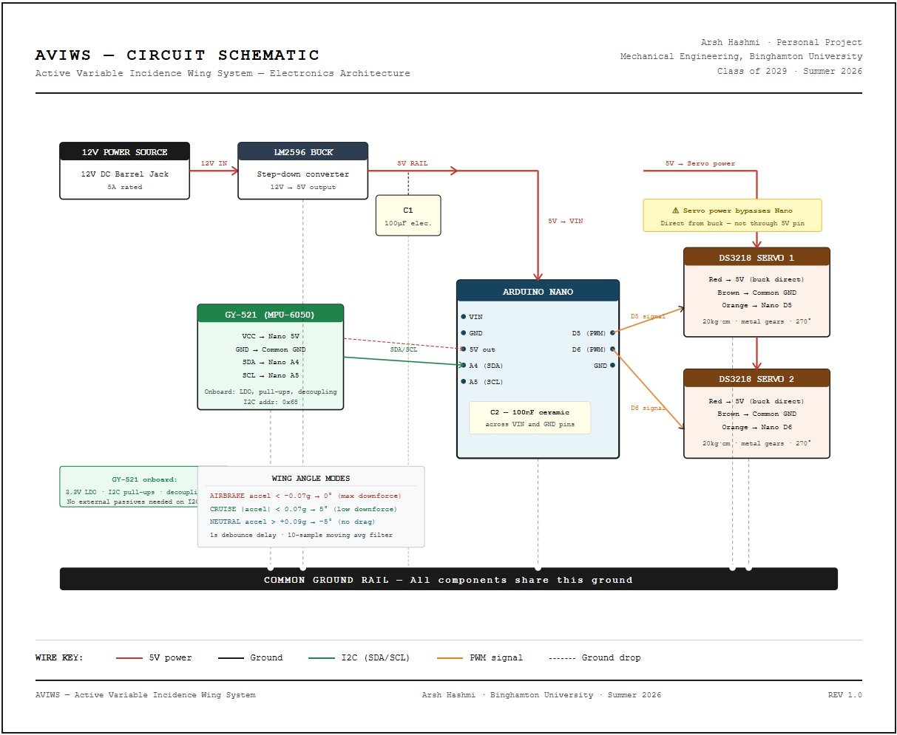
The firmware is deliberately dumb. The wing lives at three well-defined angles, not along a continuous spectrum, so bang-bang control is both sufficient and more robust against sensor noise than a proportional loop would be. What matters is everything wrapped around the threshold comparison.
Raw 16-bit accelerometer over I²C, divided by 16,384 for the ±2 g full-scale range.
Subtract a 0.07 g offset: gravity bleeding into the longitudinal axis from an imperfect mounting angle, measured stationary and level.
Ten-sample moving average in a circular buffer, to kill engine vibration, road inputs and buffeting off the wing itself.
A new mode has to hold for a full second before it's executed. Any reversion resets the timer.
→ Neutral, −5°. Under throttle, get out of the way.
→ Cruise, +5°. Holding speed, hold baseline downforce.
→ Airbrake, +40°. Braking, deploy everything.
The loop polls at 50 ms, a 20 Hz update rate. That's far faster than it needs to be: aerodynamic loads on a street car shift over hundreds of milliseconds, and the one-second debounce, not the polling rate, is what actually sets how quickly the wing responds. The filter itself adds about 500 ms of lag, which sits comfortably underneath that.
On the bench: an I²C scan to confirm the MPU-6050 at address 0x68, each servo driven individually and then together to verify the mirrored position logic, the IMU tilted by hand along each axis to identify the longitudinal one, and the filter checked by tapping the sensor to confirm brief impulses didn't cross a threshold.
Then the whole thing went on the trunk lid of a 2011 E93 on suction cups, chosen precisely because they leave the car untouched and move to any other car without refabricating anything. A laptop ran into the cabin on a USB lead for live serial, and a GoPro on the roof watched the wing.
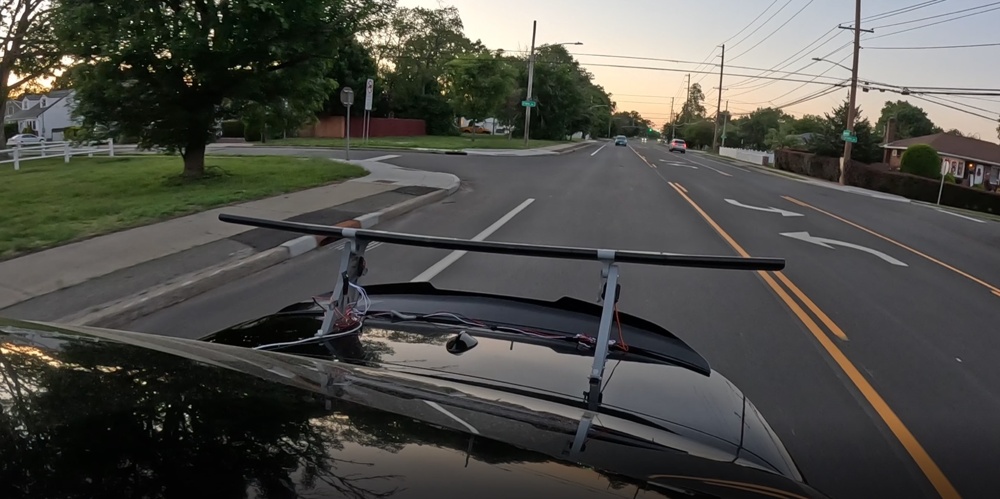
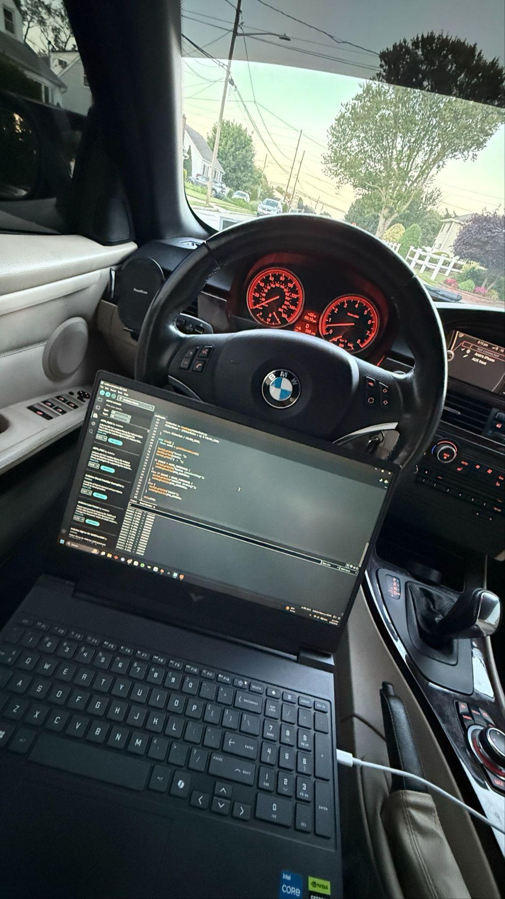
It worked. The wing flattened under throttle, settled back to cruise at steady speed, and deployed fully under braking, at the points in the acceleration profile it was supposed to. The one-second debounce turned out to be the critical detail. Earlier firmware without it hunted between modes on road undulations, gear changes and small throttle inputs. The thresholds proved sensitive enough for ordinary street driving without needing to be provoked. The suction mount didn't move.
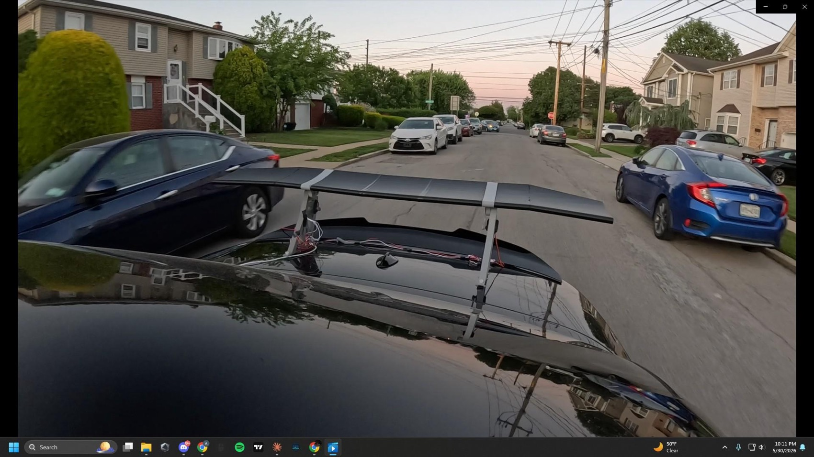
The connecting arm between the servo horn and the wing element fractured on one of its thinner sections during testing. The wall thickness there wasn't enough to carry the bending moment from the horn while aerodynamic hinge moment was working on the wing at the same time. The system kept running afterwards, but with degraded positional accuracy on that side.
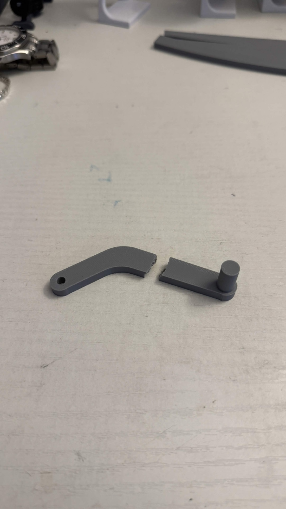
This is a part-level mistake with a part-level fix, and it is first in the queue for the next revision: more wall thickness at the failure location, a larger fillet radius at the stress concentration, and probably CF-PLA for that one component to buy stiffness without much mass. Nothing about the architecture needs to change.
The architecture was drawn with the second axis in mind from the beginning, which is why the IMU's full six degrees of freedom are read even though the controller currently uses exactly one of them.
Built solo, in a week, with a consumer 3D printer and off-the-shelf parts. The core system works, the one failure mode is understood, and the next iteration is already specified.